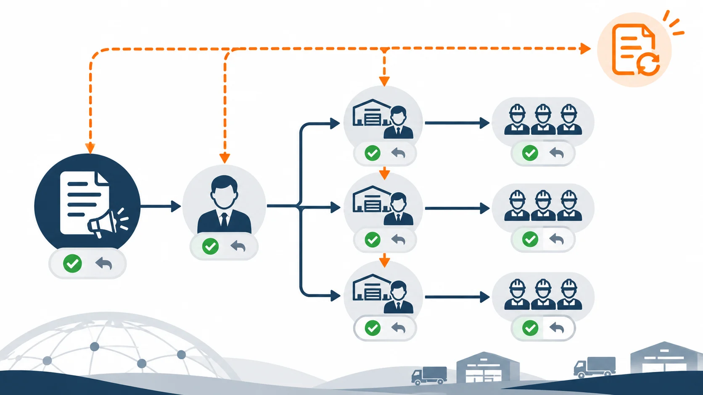

Article · 飞函
Article · 飞函
线路调整时，区域负责人如何让通知不走样
下午，一条干线因临时调整需要改走备用线路。区域负责人先把消息发到调度群，站点主管再转到各自的工作群。等司机班组收到通知，有的群只剩下“今晚改线”，有的群保留了新线路，却漏了生效时间。大家都在转发，现场却可能按不同版本执行。
问题通常出在通知被当作一条普通聊天消息：它可以迅速扩散，却会在补充说明、截图转发和口头复述中失去上下文。区域负责人需要管住的不是群的数量，而是哪一版指令生效、谁负责转达、谁已经确认、执行中如何处理新变化。
先定稿，再分发
线路调整通知应有一个完整的原始版本，至少写清调整原因、受影响线路与站点、生效和预计结束时间、替代安排、需要执行的动作，以及异常情况的联系人。尚未确定的事项要标为“待确认”，避免接收者自行补全。
区域负责人可以先与调度确认内容，再由指定负责人发出正式通知。后续各群转达时，尽量引用或转发同一条通知，并附上本群需要执行的具体动作。例如，站点群明确交接时间，司机班组群明确出车前要核对的线路。这样既保留统一口径，也让每个岗位知道自己要做什么。
把“看到”与“接住”分开
消息送达不等于任务有人负责。区域负责人可以按“区域负责人—站点主管—班组负责人”的链条指定确认人：站点主管确认本区域是否受影响、是否已经转达；班组负责人确认人员安排和执行障碍。回复不必冗长，但应能回答“已收到、已转达、能否按时执行”三个问题。
飞函即时通讯提供重要消息、已读回执和历史消息搜索等能力，可帮助负责人突出正式通知、查看阅读情况，并在事后找到原始消息。已读只能辅助判断消息是否被看到；执行确认仍需要明确的责任人和回复规则。

有变化，就发布新版本
线路调整后，生效时间或替代安排仍可能变化。此时不要只在某个群的长对话里追加一句“时间再推迟一小时”。应由原通知负责人发布完整的新版本，注明变更点和生效时间，再请各级确认人重新转达。旧版本也应明确标记为已被替代，避免后来查看消息的人照旧执行。
每天交接前，区域负责人可以只核对三项：受影响站点是否全部确认，尚未解决的执行障碍由谁处理，现场依据的是哪一版通知。让同一版本沿责任链传递，并让每次变更都能被重新确认，多个群才能承担快速协同的作用，而不成为不同口径的来源。